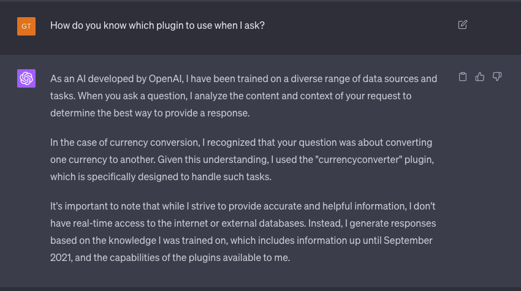

ChatGPT Plugins
Robert Kuliński
What are ChatGPT plugins?
- "Portal" to another services.
- Access to most recent or private data.
- E.g. currency exchange rates, weather.
Requirements to use plugins
- ChatGPT v4
- Enroll to program.
- https://openai.com/blog/chatgpt-plugins
Currency Rate

How does it know which plugin to use?
Let's ask ChatGPT
Steps to create your plugin
- API.
- OpenAPI specification.
- Manifest file.
- Register plugin in ChatGPT UI.
- DOCS
OpenAPI specification
openapi: 3.0.1
info:
title: Zip File Creation Plugin
description: A plugin that allows the user to create a zip file from a list of files using ChatGPT and produces url to download that zip.
version: 'v1'
servers:
- url: http://localhost:3000
paths:
/zip:
post:
operationId: createZip
summary: Create a zip file from a list of files and return a unique URL to download it.
requestBody:
description: A list of files to include in the zip file. Each file should be an object with a 'filePath' and 'content' property.
...
responses:
"200":
description: OK
content:
application/json:
schema:
type: object
properties:
url:
type: string
description: The URL to download the zip file.
Manifest file
{
"schema_version": "v1",
"name_for_human": "Zip Files",
"name_for_model": "zip_files_and_show_url_to_download",
"description_for_human": "Generate url to download zipped files generated by ChatGPT.",
"description_for_model": "Generate url to download zipped files generated by ChatGPT.",
"auth": {
"type": "none"
},
"api": {
"type": "openapi",
"url": "http://localhost:3000/.well-known/openapi.yaml"
},
"logo_url": "http://localhost:3000/.well-known/logo.png",
"contact_email": "support@example.com",
"legal_info_url": "http://www.example.com/legal"
}
My ChatGPT plugin
- Curiosity.
- Useful and simple to develop ZIP plugin.
- ZIP plugin is capable of creating a zip from files generated by chat.
Presentation of ZIP plugin
Sample API Request
curl --location 'http://localhost:3000/zip' \
--header 'Content-Type: application/json' \
--data '{
"files": [
{
"filePath": "folder1/file1.js",
"content": "console.log('\''Hello from file1.js!'\'');"
},
{
"filePath": "folder1/folder2/file2.js",
"content": "console.log('\''Hello from file2.js!'\'');"
},
{
"filePath": "folder1/folder2/file3.js",
"content": "console.log('\''Hello from file3.js!'\'');"
}
]
}'
{
"url": "http://localhost:3000/download/file_1691225453387.zip"
}
Let's ask Chat to use our plugin using query:
"Prepare simple react project with one hello page"
What plugin could do for Adverity
- Generate entities (e.g. enrichments) using chat interface.
- You tell chat how you want your data to be transformed and it uses adverity API to generate it.
- It could be as simple as chat giving JSON with config that user could paste inside Adverity app.